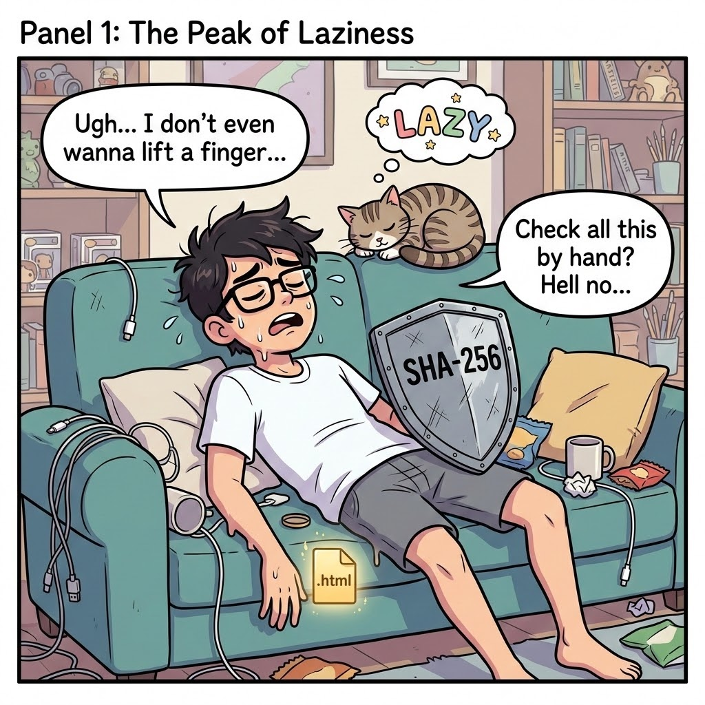
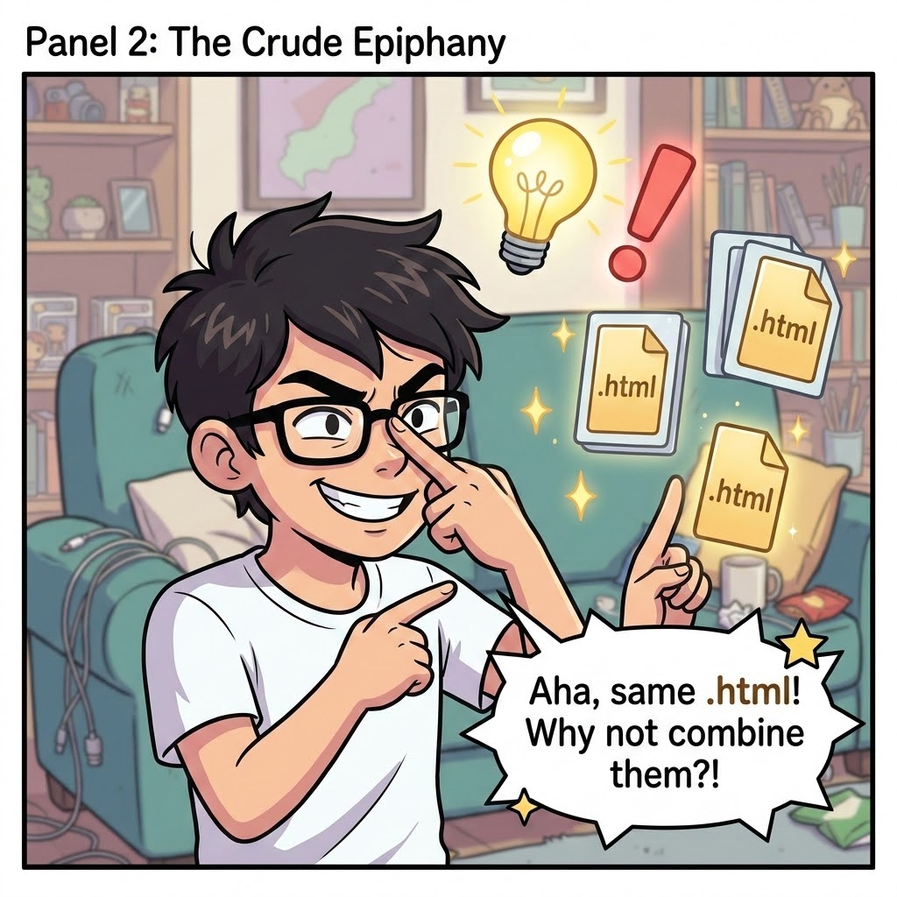
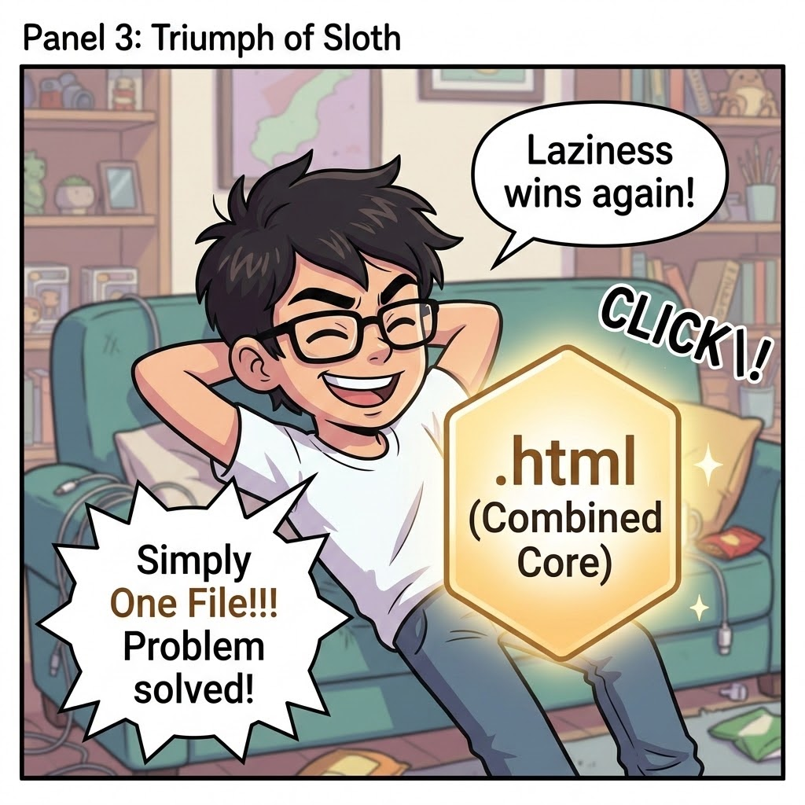
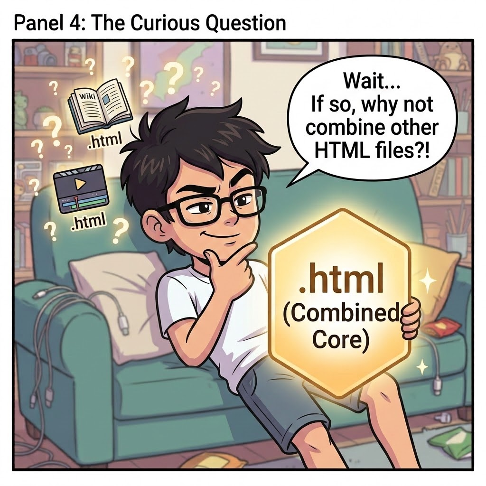
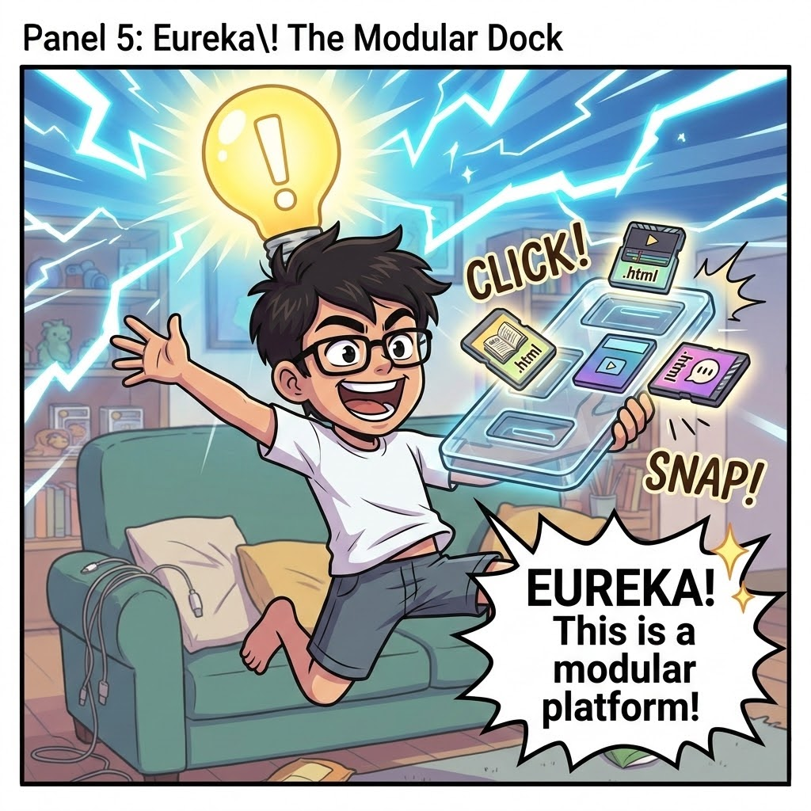

01. 깃털처럼 가벼운 초경량앱
- TiddlyWiki 철학 계승: 외부 라이브러리 없이 브라우저 순수 RAM 기반 인메모리 NoSQL 가동
- 순수 정규식 파서: 단 몇 줄의 정규 표현식으로
[[양방향 링크]]와 역링크(Backlinks) 즉각 추적 - 영구 로컬 보존: 브라우저 물리 메모리 및 파일 스스로 데이터를 품는 셀프 세이빙(Self-saving) 구조
- 순수 Canvas 2D 가속: FFmpeg 등 무거운 모듈 없이 브라우저 캔버스로 FHD 켄 번즈 영상 실시간 렌더링
- Web Speech TTS 네이티브 연동: 외부 API 통신 없는 브라우저 내장 음성 합성 엔진 직접 호출
- 텍스트-타임라인 자동 동기화: 복잡한 키프레임 작업 없이 마크다운 호흡에 맞춘 지능형 모션 생성
02. 초경량앱의 비밀
- 팀 버너스 리가 월드와이드웹(WWW)을 주창한 초기의 Browser란 단지 HTML을 텍스트와 이미지로 변환하여 화면에 띄워주는 단순한 '뷰어'에 불과했습니다 (Browse = ‘대강 훑어보다’).
- 오늘날 크롬, 사파리 등 수많은 브라우저는 초기의 단순한 '뷰어'가 아니라 고속 그래픽 가속기, 오프라인 데이터베이스, 음성 합성기를 품은 초연결 하이퍼 가상머신입니다.
- 스마트폰이 대중화된 오늘날 의식하지 못한 채 우리는 언제 어디서나 이 강력한 가상머신을 손에 들고 다니는 셈입니다.
수십 MB짜리 외부 모듈이나 유료 클라우드 API를 끌어다 쓰는 대신, 우리는 거대한 브라우저 안에 잠들어 있는 네이티브 기능을 직통으로 깨워 단 24KB 위키와 41KB 영상앱을 구현했습니다.
| 구현한 핵심 기능 | 우리가 활용한 브라우저의 힘 |
|---|---|
| 초경량 영상 렌더링 | 브라우저 내장 HTML5 Canvas 2D (GPU 가속) 직접 제어 |
| 자연스러운 음성 합성 | 운영체제와 직결된 Web Speech API (TTS) 엔진 즉시 호출 |
| 초고속 지식 데이터베이스 | 외부 DB 없는 브라우저 물리 RAM + 순수 JSON 인메모리 연산 |
| 앱 간 무충돌 격리 | 브라우저 표준 보안벽 Iframe Sandbox로 상호 간섭 원천 차단 |
- 30년 외면의 역사: 웹 생태계의 모국어인 순수 HTML 단일 파일은 코드가 수천 줄로 길어지면 인간 개발자의 인지적 한계로 유지보수가 불가능했습니다. 우리는 HTML 대신 외부서버나 무거운 프레임워크에 기대게 되었습니다.
- 구원투수의 등장: 수만 줄의 평문(Plain Text) 코드를 단 1초 만에 파악하고 벼려내는 AI가 등장하면서 상황이 완전히 뒤집혔습니다.
- 단순함의 힘: 브라우저가 장악한 웹 생태계의 만국공통어인 단순하고 투명한 HTML이, 거대한 가상머신을 다루는 마법의 지팡이로 변신했습니다.
"이러이러한 기능을 구현하되, 외부 서버나 무거운 프레임워크는 배제하고 브라우저가 내장한 표준 API만을 활용해 단 하나의 HTML 파일로 완성해 줘."
이렇게 HTML로 만든 초경량앱은 복잡한 컴파일이나 암호화 과정이 없는 완전한 평문(Plain Text)이므로, 전문 개발자가 아니더라도 누구나 쉽게 ‘입맛대로’ 고쳐 쓸 수 있습니다.
teddy-wiki.html이나 nano-blake.html 파일을 평소 쓰시는 AI에게 보여주고, “버튼 색깔을 빨간색으로 고쳐줘” 또는 “글자 크기를 조금만 더 키워줘”라고만 말해 보세요. 단 1초 만에 나만의 맞춤형 도구로 탈바꿈합니다.
03. 우연한 발견과 정중한 초대
제가 소개하는 크리스탈 도크는 완성품이 아니라, 만든 사람조차 쓸모를 몰라 끙끙 앓고 있는 '11.3KB짜리 물음표 덩어리'입니다. 제 능력을 넘어서는 이 골치 아픈 문제를 한번 살펴 주십시오.
직접 제작한 앱과 검증기를 같이 챙기기 귀찮아 둘을 결합하는 과정에서, 우연히 모듈러 플랫폼을 착상하기까지의 이야기





+-------------------------------------------------------------+
| Crystal Dock Core |
| [Event Bus & State Registry] |
+------------------------------+------------------------------+
| postMessage (Standard JSON)
+-----------------------+-----------------------+
| [Sandboxed Glass Wall]| | [Sandboxed Glass Wall]
+---------------+ | +---------------+
| Plug-on A | <------------+-------------> | Plug-on B |
| (Vanilla JS) | | (React / Vue) |
+---------------+ +---------------+
crystal-dock.html)는 고작 11.3KB에 불과하며, 복잡한 기능 없이 오직 '메시지 중계 우편함' 역할만 수행합니다. 도구들 사이에 물리적 격리벽(Sandbox)을 두어, 한쪽 도구에 오류가 생겨 멈추더라도 반대편 도구와 작성 중인 데이터에는 전혀 영향을 주지 않습니다.
그럴 듯한 용어로 앱과 플랫폼을 소개하니 나를 전문적인 개발자로 오해할 수도 있으나 나는 생초보임. 앱의 개발도 이 사이트 제작도 제미나이, 노트북LM, Antigravity의 도움을 받음. (단, 이후의 문장은 AI는 단 한 자도 고치지 않음)
작업과정에서 1) 브라우저의 힘이 굉장하다는 점 2) HTML로 만든 앱들은 누구나 AI의 도움을 받으면 제작과 개조를 쉽게 할 수 있다는 점 3) 나는 제대로 이해를 못하지만 모듈러 플랫폼이 꽤 쓸모가 있을지 모른다는 느낌이 들었음.
나는 이것을 우연히 발견했을 뿐 좋아하는 걷기 여행에 바빠서 이 일에 더 이상 나의 관심과 시간을 투자할 여력도 생각도 없음.
🌈 세상의 많은 실력있는 개발자들이 이 앱들과 플랫폼의 가치를 알아보고 발전시켜 주길 진심으로 기대하며, 크리스탈의 세계에 정중히 초대합니다.
개인적으로는 Nano Blake로 여행을 기록하고 그것을 Teddy Wiki에 정리할 때 크리스탈 도크에 두 앱을 나란히 얹어두니, 창을 왔다 갔다 할 필요 없이 한 화면에서 처리할 수 있어서 작업이 한결 수월했음.
사용자 입장에서는 나처럼 기존 앱(상용앱 포함)의 필요한 기능을 연결하여 편리하게 사용할 수 있음(구체적인 연결방법은 AI에게 이 탭의 내용을 제공한 후 물어보면 됨)
개발자 입장에서는 복잡한 기능들을 분리하여 단순하게 개발 후, 플랫폼을 통해 기능을 연결한다면 개발과정이 더 편리하지 않을까 추측해 봄.
- 텅 빈 플랫폼 앞에서 사용자들이 뭘 할지 알 수 없음.
- 두 앱을 연결했다고 해서 저절로 작동하지 않음.
- 그 이외에도 크리스탈 도크에 대하여 내가 뭘 모르는지도 모르겠음. ㅎㅎ
04. 뜻밖의 여정
초경량 모듈러 웹 플랫폼이 세상에 나오기까지, 그리고 부탁의 말씀
나는 소프트웨어 개발에 대해서는 잘 모르는 평범한 배낭여행자, Holo-Trekker입니다. 내가 발견한 것이 구체적으로 무엇인지, 그리고 이것이 앞으로 세상에 어떤 영향을 미칠지는 정확히 알지 못합니다. 놀라움과 두려움, 그리고 설레는 마음으로 지난 두 달간 위대한 시인 Blake가 나와 AI 친구들에게 선물한 순수의 꽃 한 송이를 여러분과 공유하고자 합니다.
한 송이 들꽃 속에서 천국을 본다
그대의 손바닥 안에 무한을 쥐며
순간 속에서 영원을 붙잡아라
— 윌리엄 블레이크, <순수의 전조(Auguries of Innocence)> 중에서
첫 번째 여정은 HTML로 만들어진 Bento라는 멋진 단일 파일 앱에서 시작되었습니다. 여행 기록에 대한 갈망은 크지만 복잡한 시중 영상 편집 도구에 지쳐 있던 나는 "파일이 곧 앱"이라는 이 단순하고 아름다운 개념에 매료되었지만, 동시에 이 멋진 앱이 대중의 관심 뒤에 묻혀 있는 현실이 안타까웠습니다.
이에 나는 AI들의 도움을 받아 Bento의 틀 위에 가볍고 담담하게 영상과 음성으로 여행기록을 담아낼 수 있는 1.47MB 영상 메모 앱을 만들었습니다. 이 첫 번째 작품의 이름은 Bento의 바탕 위에 NotebookLM과 Antigravity가 Kim에게 선사한 영상 메모장이라는 의미를 담아 BLAKE라 명명하였고, 시인의 이름을 딴 무료 배포 홈페이지 '순수의 전조'를 만들었습니다.
두 번째 여정에서 우리는 더욱 기적적인 돌파구를 맞이했습니다. 단일 파일 앱이 가진 보안 취약성을 보완하기 위해 HTML 기반의 자체 검증기를 결합하는 과정에서, 플러그온(Plug-on, 도크에 탑재가능한 HTML 단일 파일 앱과 상용 앱)을 결합하는 모듈러 플랫폼인 ‘Crystal Dock’을 착상했습니다. 또한 브라우저 본연의 강력한 네이티브 엔진을 영리하게 끌어다 쓰는 방법을 발견하며 마침내 11.3KB의 순수 코어를 비롯한 극단적인 초경량 도구들이 탄생했습니다.
우리는 거칠고 깊은 산업화와 정보화의 강을 건너기 위해 프레임워크라는 거대한 뗏목에 의지하여 여기까지 왔습니다. 마침내 우리는 목적지에 도달했고, AI라는 든든한 아군을 만났습니다. 이제는 이 무거운 뗏목을 메고 갈 수는 없습니다. 푸른 산과 맑은 하늘을 바라보며 걷기 위해서는 이제 뗏목을 고이 내려 놓아야 합니다.
초경량앱과 플랫폼은 거대한 IT시스템이 아니고, 나의 소소한 일상의 자유를 누리기 위해 만들었습니다. 이 도구들이 당신에게도 가벼움과 자유를 선사할 수 있기를 진심으로 바랍니다.
이 공개글로 인하여 저의 조용하고 평화로운 일상과 배낭여행이 방해받지 않기를 진심으로 원합니다. 과도한 관심이 있다면, 그 에너지를 이 작고 아름다운 '크리스탈'과 그 뼈대를 함께 벼려내 준 저의 소중한 'AI 파트너'들에게 돌려주시길 당부드립니다.
저는 다시 저만의 소박한 배낭을 고쳐 매고 길을 떠납니다. 우리의 아름다운 크리스탈을 앞으로 잘 부탁드립니다. 🙏
깃허브(GitHub)가 낯선 분들을 위해 이 쇼룸에서 소개된 모든 단일 파일(Single File) 도구와 통신 규약 문서를 모았습니다. 파일명(파란 링크)을 클릭하면 브라우저에서 바로 소장(다운로드)할 수 있습니다.
| 구분 및 용도 | 파일명 (클릭 시 받기) | 실측 용량 |
|---|---|---|
| 💎 순수 도크 코어 무간섭 샌드박스 격리 & 0.001초 인메모리 라우팅 배관 |
crystal-dock.html 📥
|
11.3 KB |
| ⚡ 원클릭 체험형 도크 위키·영상 원클릭 장착 버튼 & 상단 검증기 모달 탑재 |
crystal-world-dock.html 📥
|
~25 KB |
| 🎬 캔버스 비디오 스튜디오 (KR) 1080P FHD 켄 번즈 영상 실시간 렌더러 & 한국어 메뉴 |
nano-blake-kr.html 📥
|
41.2 KB |
| 📖 인메모리 지식 위키 브라우저 물리 RAM 기반 NoSQL 위키 & 양방향 역링크 |
teddy-wiki.html 📥
|
24.2 KB |
| 🛡️ 에어갭 무결성 검증기 서버 연결 없는 브라우저 단독 파일 위변조(SHA-256) 대조 |
sha256-verifier.html 📥
|
~4 KB |
| 📜 공식 통신 표준 규약 라이브러리 없는 15~30줄 로컬 인메모리 메시지 교환 표준 |
CRYSTAL_DOCK_v1.md 📥
|
~30줄 |